Задачи удаления невидимых линий и поверхностей являются одними из наиболее сложных в машинной графике. Алгоритмы удаления невидимых линий и поверхностей служат для определения линий, ребер, поверхностей или объемов, которые видимы или невидимы для наблюдателя, находящегося в заданной точке пространства.
Необходимость удаления невидимых линий, ребер, поверхностей или объемов проиллюстрированы на (Рис.42).
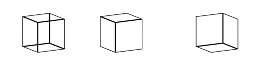
Рис. 42
Одному пространственному каркасному изображению куба без удаления невидимых ребер может соответствовать два различных положения куба в пространстве. Или, в общем случае, несколько разных объектов. Алгоритмы удаления невидимых линий и поверхностей необходимо применять с целью повышения реалистичности изображения для следующих приложений:
- Авиатренажеры 30 кадр/с.
- Машинная мультипликация.
- Виртуальные сцены.
Все алгоритмы удаления невидимых линий (поверхностей) включает в себя сортировку. Главная сортировка ведется по геометрическому расстоянию от тела, поверхности, ребра или точки до точки наблюдения. Основная идея, положенная в основу сортировки по расстоянию заключается в том, что чем дальше расположен объект от точки наблюдения, тем больше вероятность, что он будет полностью или частично заслонен одним из объектов более близких к точке наблюдения.
После определения расстояний или приоритетов по глубине остается провести сортировку по горизонтали и вертикали, чтобы выяснить, будет ли рассматриваемый объект действительно заслонен объектом, расположенным ближе к точке наблюдения.
Эффективность любого алгоритма удаления невидимых линий или поверхностей в большей мере зависит от эффективности процесса сортировки.
Алгоритмы удаления невидимых линий или поверхностей можно классифицировать по способу выбора системы координат или пространства, в котором они работают. Алгоритмы, работающие в объектном пространстве, имеют дело с физической системой координат, в которой описаны эти объекты. При этом получаются весьма точные результаты, ограниченные лишь точностью вычислений. Полученные изображения можно свободно увеличивать несколько раз.
Алгоритмы, работающие в усеченном мировом пространстве, особенно полезны в тех приложениях, где необходима высокая точность.
Алгоритмы, работающие в пространстве изображения, имеют дело с системой координат того экрана, на котором объекты изображаются. При этом точность вычислений ограничена разрешающей способностью экрана. Результаты, полученные в пространстве изображения, а затем увеличенные во много раз не будут соответствовать исходной сцене. Например, могут не совпадать концы отрезков.
Алгоритмы, формирующие список приоритетов работают попеременно в обеих упомянутых системах координат. Объем вычислений для любого алгоритма, работающего в обычном пространстве и сравнивающего каждый объект сцены со всеми остальными объектами этой сцены, растет теоретически как квадрат числа объектов n2.
Аналогично, объем вычислений любого алгоритма работающего в пространстве изображения и сравнивающего каждый объект сцены с позициями всех пикселов в системе координат экрана растет теоретически как nN. Здесь n - обозначает количество объектов (тел, плоскостей) в сцене, а N-число пикселов .
Теоретически трудоемкость алгоритмов работающих в объектном пространстве, меньше трудоемкости алгоритмов работающих в пространстве изображение при n<N. Поскольку N обычно равно 640x480, то теоретически большинство алгоритмов следует реализовать в объектном пространстве. Однако на практике это не так. Дело в том, что алгоритмы, работающие в пространстве изображения, более эффективны, потому что для них легче воспользоваться преимуществом когерентности при растровой реализации.
Алгоритм плавающего горизонта чаще всего используется для удаления невидимых линий трехмерного представления функций, описывающих поверхность в виде: F(x,y,z) = 0
Подобные функции возникают во многих приложениях, в математике, технике, естественных науках и др.
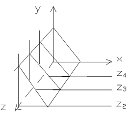
Рис. 43
Поскольку в приложениях в основном интересуются описанием поверхности, этот алгоритм обычно работает в пространстве изображения.
Главная идея данного метода заключается в сведении трехмерной задачи к двумерной путем пересечения исходной поверхности последовательностью параллельных секущих плоскостей, имеющих постоянные значения координат x,y или z (Рис.43).
Указанные параллельные плоскости, определяются постоянным значением z. Функция F(x,y,z) = 0 сводится к последовательности кривых, лежащих на каждой из этих параллельных плоскостей, например к последовательности y=f(x,z) или x=g(y,z), где z постоянна на каждой из заданных параллельных плоскостей.
Итак, поверхность теперь складывается из последовательности кривых, лежащих в каждой из этих плоскостей (Рис.44).
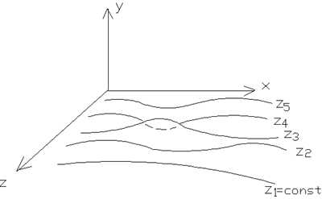
Рис. 44
Здесь предполагается, что полученные кривые являются однозначными функциями независимых переменных.
Если спроецировать полученные кривые на плоскость z=0 , как показано на рисунке (Рис.45), то сразу становится ясна идея алгоритма удаления невидимых участков исходной поверхности.
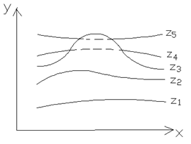
Рис. 45
Алгоритм сначала упорядочивает плоскость z=const по возрастанию расстояния до них от точки наблюдения. Затем для каждой плоскости, начиная с ближайшей к точке наблюдения, строится кривая, лежащая на ней, то есть для каждого значения координаты x в пространстве изображения определяется соответствующее значение y.
Алгоритм удаления невидимых линий заключается в следующем:
Если на текущей плоскости при некотором заданном значении x соответствующее значение y на кривой больше значения y для всех предыдущих кривых при этом значении x, то текущая кривая видима в этой точке; в противном случае, она невидима.
Невидимые участки показаны пунктиром. Реализация данного алгоритма достаточно проста. Для хранения максимальных значений y при каждом значении x используется массив, длина которого равна числу различимых точек (разрешению) по оси x в пространстве изображения.
Значения, хранящиеся в этом массиве, представляют собой текущие значения "горизонта". Поэтому, по мере рисования каждой очередной кривой этот горизонт всплывает. Фактически этот алгоритм удаления невидимых линий работает каждый раз с одной линией.
Алгоритм работает хорошо до тех пор, пока, какая-нибудь очередная кривая не окажется ниже самой первой из кривых, как показано на рисунке (Рис. 46).

Рис . 46
Подобные кривые естественно видимы и представляют собой нижнюю сторону исходной поверхности, однако алгоритм будет считать их невидимыми. Нижняя сторона поверхности делается видимой, если модифицировать этот алгоритм , включив в него нижний горизонт , который опускается вниз по ходу работы алгоритма. Это реализуется при помощи второго массива, длина которого равна числу различимых точек по оси x в пространстве изображения. Этот массив содержит наименьшее значение y для каждого значения x. Алгоритм теперь становится таким:
Если на текущей плоскости при некотором заданном значении x соответствующее значение y на кривой больше максимума или меньше минимума по y для всех предыдущих кривых при этом x , то текущая кривая видима.
В противном случае она невидима.
Полученный результат показан на рисунке (Рис.47).
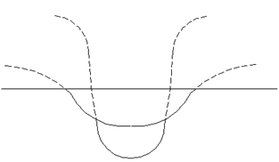
Рис. 47
В изложенном алгоритме предполагается, что значение функции, то есть y, известно для каждого значения x в пространстве изображения. Однако если для каждого значения x нельзя указать (вычислить) соответствующее ему значение y, то невозможно поддерживать массивы верхнего и нижнего плавающих горизонтов в актуальном состоянии.
В таком случае используется линейная интерполяция значений y между известными значениями для того, чтобы заполнить массивы верхнего и нижнего плавающих горизонтов (Рис. 48).
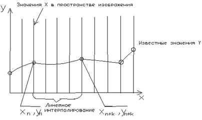
Рис. 48
Если видимость кривой меняется, то метод с такой простой интерполяцией не дает корректного результата. Это показано на рисунке (Рис.49).
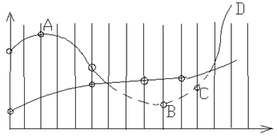
Рис. 49
Предполагается, что операция по запоминанию массивов проводится после проверки видимости, получаем, что при переходе к текущей кривой от видимого состояния к не видимому состоянию - сегмент AB - точка (x n+k , yn+k) - объявляется невидимой. Тогда участок кривой между точкой (x n , yn) и (x n+k, yn+k) не изображается и операция по запоминанию массивов не проводится. Образуется зазор между текущей и предыдущей линиями.
Если на участке текущей кривой происходит переход от невидимого состояния к видимому - сегмент CD - то точка ( x m+k , ym+k ) - объявляется видимой, а участок кривой между точкой ( x m, ym) и ( x m+k, ym+k) изображается и операция по запоминанию массивов проводится. Поэтому изображается и невидимый кусок сегмента CD.
Кроме того, массивы плавающих горизонтов не будут содержать точных значений y. А это может повлечь за собой нежелательные дополнительные эффекты для последующих кривых. Следовательно, необходимо решить задачу о поиске точек пересечения текущей и предыдущих кривых.
Существует несколько методов получения точек пересечения кривых. На растровых дисплеях значения координаты x можно увеличивать на 1,начиная с x n или xm . Значение y , соответствующее текущему значению координаты x в пространстве изображения, получается путем добавления к значению y соответствующему предыдущему значению координаты x , вертикального приращения 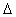 y вдоль заданной кривой. Затем определяется видимость новой точки с координатами (x+1 , y + y). Если эта точка видима, то активируется связанный с ней пиксел. Если невидима, то пиксел не активируется, а x увеличивается на 1. Этот процесс продолжается до тех пор, пока не встретится x n+k или x m+k
Пересечение для растровых дисплеев определяется изложенным методом с достаточной точностью.
Точное значение точки пересечения двух прямолинейных отрезков, которые интерполируют текущую и предшествующую кривые между точкой (x n , yn) и ( x n+k , yn+k) задается формулами:
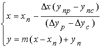 , где
x = x n+k - xn
y p = (y n+k) p - (yn) p
y c = (y n+k) c - (yn)c
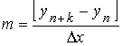
и индексы C - текущая кривая (current) P - предыдущая кривая (previous)
Результат на (Рис 50).
Рис. 50
Теперь алгоритм излагается более формально.
Если на текущей плоскости при некотором заданном значении x соответствующее значение y на кривой больше max или меньше min по y для всех предыдущих кривых, при этом x, то текущая кривая видима. В противном случае она невидима.
Если на участке от предыдущего xn до текущего xn+k значения x видимость кривой изменяется, то вычисляется точка пересечения (xi).
Если на участке от xn до xn+k сегмент кривой полностью видим, то он изображается целиком; если он стал невидимым, то изображается фрагмент от xn до xi; если он был невидим, а стал видим, то изображается фрагмент от (xi) до (xn+k ) .
Заполнить массивы верхнего и нижнего плавающих горизонтов.
Изложенный алгоритм приводит к некоторым дефектам, когда кривая, лежащая в одной из более удаленных от точки наблюдения плоскостей, появляется слева или справа из под множества кривых, лежащих в плоскостях ближе к наблюдателю. Эффект показан на (Рис. 51).
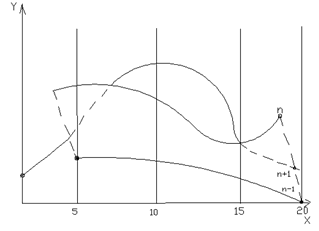
Рис. 51
Плоскости n - 1 и n уже обработаны и находятся и находятся ближе к точке наблюдения. Что получается при обработке плоскости n + 1. После обработки кривых n - 1 и n верхний горизонт для значений x = 0 , x =1 равен начальному значению y. Для значений x от 2 до 17 он равен ординатам кривой n, а для значений 18,19,20 - ординатам кривой n-1. Нижний горизонт для значений x=0 и x=1 равен начальному значению y , для значений x=2,3,4-ординатам кривой n , а для значений x от 5 до20 - ординатам кривой n-1.
При обработке текущей кривой (n+1) алгоритм объявляет ее видимой при x=4. Аналогично эффект возникает справа при x=18. Такой эффект приводит к появлению зазубренных боковых ребер.
Проблема с зазубренностью боковых ребер решается включением в массивы верхнего и нижнего горизонтов ординат соответствующих штриховым линиям. Это можно эффективно выполнить, создав ложные боковые ребра.
Обработка левого бокового ребра
Если Pn является первой точкой на первой кривой, то запомним Pn в качестве Pn -1 и закончим заполнения. В противном случае создадим ребро, соединяющее Pn -1 и Pn . Занесем в массивы верхнего и нижнего горизонтов ординаты этого ребра и запомним Pn в качестве Pn -1 .
Обработка левого бокового ребра
Если Pn является последней точкой на правой кривой, то запомним Pn в качестве Pn -1 и закончим заполнения. в противном случае создадим ребро, соединяющее Pn и Pn -1. Занесем в массивы верхнего и нижнего горизонтов ординаты этого ребра и запомним Pn в качестве Pn -1 .
Теперь полный алгоритм выглядит так:
Для каждой плоскости z=const .
Обработать левое боковое ребро.
Для каждой точки лежащей на кривой из текущей плоскости:
Если при некотором заданном значении x соответствующее значение y на кривой больше max или меньше min но y для всех предыдущих кривых при этом x , то кривая видима в этой точке. В противном случае она невидима.
Если на сегменте от предыдущего xn до текущего xn+k значение x , видимость кривой изменяется , то вычисляется пересечение xi .
Если на участке от xn до xn+k сегмент кривой полностью видим, то он изображается целиком; если он стал невидимым, то изображается его кусок от xn до xi ; если он стал видимым, то изображается его кусок от xi до xn+k .
Заполнить массив верхнего и нижнего плавающих горизонтов.
Обработать правое боковое ребро
Если функция содержит очень острые участки (пики), то приведенный алгоритм может дать некоторые результаты. Этот эффект показан на (Рис. 52).
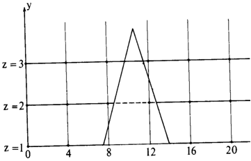
Рис. 52
Здесь самая нижняя линия (z = 1) содержит пик. При x = 8 следующая линия (z = 2) объявляется видимой. При x=12 эта линия (z = 2) объявляется невидимой, определяется точка пересечения, и линия z = 2 изображается от x=8 до этой точки. На участке от x=12 до x=16 эта линия (z = 2) вновь становится видимой, определяется новая точка пересечения и кривая изображается от этого пересечения до x=16. Следующая линия (z=3) при x=8 видима, однако она объявляется видимой и при x=12. Следовательно, эта линия изображается на участке от x=8 до x=12 , не смотря на то что она заслонена пиком. Этот эффект вызван вычислением значений функций и оценкой ее видимости на участках, меньше, чем разрешающая способность экрана, то есть тем, что функция задана слишком малым количеством точек. Если встречаются узкие пики,то функцию следует вычислить в точке с абсциссами 0, 2, 4, 6 ... 18, 20 , вместо точек 0, 4, 8, ,12, 16 ... 20 то линия z = 3 будет изображена правильно.
Алгоритм, использующий Z-буфер
Алгоритм работает в пространстве изображения. Идея z-буфера является простым обобщением идеи о буфере кадра. Буфер кадра используется для запоминания атрибутов (интенсивности) каждого пиксела в пространстве изображения. Z-буфер - это отдельный буфер глубины, используемый для заполнения координаты z или глубины каждого видимого пиксела в пространстве изображения. В процессе работы глубина или значение каждого нового пиксела, который нужно занести в буфер кадра, сравнивается с глубиной того пиксела который занесен уже в z-буфер. Если это сравнение показывает, что новый пиксел расположен впереди пиксела, находящегося в буфере кадра, то новый пиксел заносится в этот буфер и, кроме того, производится корректировка z-буфера новым значением z. Если же сравнение дает противоположный результат, то никаких действий не производится. По сути, алгоритм является поиском по x и y значения функций z(x , y).
Главное преимущество алгоритма - его простота. Кроме того, этот алгоритм решает задачу об удаление невидимых поверхностей и делает тривиальной визуализацию пересечений сложных поверхностей. Сцены могут быть любой сложности. Поскольку габариты пространства изображения фиксированы, оценка вычислительной трудоемкости алгоритма не более чем линейна.
Поскольку элементы сцены или картинки можно заносить в буфер кадра или в z-буфер в произвольном порядке, их ненужно предварительно сортировать по приоритету глубины. Поэтому экономится вычислительное время, затрачиваемое на сортировку по глубине.
Недостаток алгоритма z-буфера состоит в трудоемкости и высокой стоимости устранения лестничного эффекта, а также реализации эффектов прозрачности и просвечивания. Поскольку алгоритм заносит пикселы в буфер кадра в произвольном порядке, то нелегко получить информацию, необходимую для методов устранения лестничного эффекта.
При реализации эффектов прозрачности и просвечивания пикселы могут заноситься в буфер кадра в некорректном порядке, что ведет к локальным ошибкам.
Описание Алгоритма Z - буфера
1. Заполнить буфер кадра фоновым значением интенсивности или цвета.
2. Заполнить z-буфер минимальным значением z.
3. Преобразовать каждый многоугольник в растровую форму в произвольном порядке.
4. Для каждого Пиксел (x, y) в многоугольнике вычислить его глубину z(x, y).
5. Сравнить глубину z( x , y ) со значением z буфер ( x , y ) , хранящимся в z-буфере в этой же позиции.
6. Если z( x , y ) >z буфер ( x , y ), то записать атрибут этого многоугольника (интенсивность, цвет, и т. п.) в буфер кадра и заменить z буфер (x , y) по z(x , y).
7. В противном случае никаких действий не производится.
Если известно уравнение плоскости, несущей каждый многоугольник, то вычисление глубины каждого пиксела на сканирующей строке можно проделать пошаговым способом.
Уравнение плоскости имеет вид:
ax + by + cz + d = 0 , отсюда
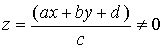
Для сканирующей строки y = const.
Поэтому глубина пиксела на этой строке, у которой x1 = x + x определяется
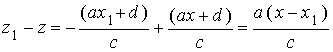
или 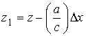 , но x =1. Следовательно
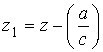
Алгоритм, использующий z буфер можно также применять для построения сечений поверхностей. Требуется изменить только оператор сравнения.
z( x , y ) > z буфер ( x , y ) and z( x , y ) £ z сечение , где z сечение - глубина искомого сечения.
Эффект заключается, в том, что остаются только такие элементы поверхности, которые лежат на самом сечении или позади него.
Построение реалистичных изображений
Построение реалистических изображений включает как физические и психологические процессы, поскольку свет - электромагнитная энергия, после взаимодействия с окружающей средой попадает в глаз, где и воспринимается мозгом.
Световая энергия, падающая на поверхность, может быть поглощена, отражена или пропущена. Частично она поглощается и превращается в тепло, а частично отражается или пропускается. Объект можно увидеть, если он отражает или пропускает свет, если объект поглощает весь падающий свет, то он невидим и называется абсолютно черным телом.
Количество поглощенной, отраженной или пропущенной энергии света зависит от его длины волны. При освещении белым светом, в котором интенсивность всех длин волн снижена примерно одинаково, объект выглядит серым.
Если поглощается весь белый свет, то объект кажется черным, а если небольшая его часть, то белым. Если поглощаются только определенные длины волн, то у света исходящего от объекта распределяется энергия и объект выглядит цветным. Цвет объекта определяется поглощенными длинами волн. Свойства отраженного света зависят от строения, направления и формы источника света, от ориентации и свойства поверхности. Отраженный от тела свет может также быть диффузным или зеркальным. Диффузное отражение света происходит, когда свет как бы проникает под поверхность объекта, поглощается, а затем вновь испускается. При этом положение наблюдателя не имеет значение, так как диффузно отраженный свет рассеивается равномерно во всех направлениях. Зеркальное отражение происходит от внешней поверхности объекта. Свет точечного источника отражается от идеального рассеивателя по закону косинусов Ламберта. Интенсивность отраженного света пропорциональна косинусу угла между направлением света и нормалью к поверхности (Рис. 53).
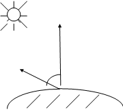
Рис. 53
I = Il Kd Cosq 0 £ q £ p/2
где I - интенсивность отраженного света;
Il - интенсивность точного источника;
Kd - коэффициент диффузного отражения, Kd - зависит от материала и длины волны света но в простых моделях обычно считается постоянным и принимается 0 £ Kd £ 1;
q - угол между направлением света и нормалью к поверхности.
Поверхность предметов изображенных при помощи простой модели освещения с Ламбертовым диффузным отражением выглядит блеклой и матовой. Предполагается, что источник точечный, поэтому объекты, на которые не падает прямой свет, кажутся черными. Обычно на объекты в реальных условиях падает еще и рассеянный свет, отраженный от окружающей объектов и обстановки (стены, потолок и т.д.). Рассеянному свету соответствует распределенный источник.
Учет источников ведет к вычислительным затратам и это заменяется на константу.
I = Ia Ka +Il Kd Cosq 0 £ q £ p/2,
где Ia -интенсивность рассеянного света;.
Ka -коэффициент диффузного отражения рассеянного света (0 £ Kd £ 1).
Пусть даны два объекта, одинаково ориентированные относительно источника, но расположенные на разном расстояние от него. Если найти интенсивность по данной формуле, то она окажется одинаковой. Это значит, что когда предметы перекрываются, их невозможно различить, хотя интенсивность света обратно пропорциональна квадрату расстояния от источника, и объект лежащий дальше от него должен быть темнее. Если предположить, что источник света находится в бесконечности, то диффузный член модели освещения обратится в нуль.
В случае перспективного преобразования сцены, в качестве коэффициента пропорциональности для диффузного члена можно взять расстояние d от центра проекции до объекта. Но если центр проекции лежит близко к объекту то 1/d2 изменяется очень быстро, т.е. у объектов лежащих примерно на одинаковом расстоянии от источника, разница интенсивностей чрезмерно велика. Как показывает опыт, большей реалистичности можно добиться при линейном затухании. В этом случае модель освещения выглядит так:
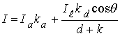 , где К - произвольная постоянная.
Если точка наблюдения находится в бесконечности, то d определяется положением объекта, ближайшего к точке наблюдения. Это значит, что ближайший объект освещается полной интенсивностью источника, а более дальние с уменьшенной.
Для цветных изображений поверхностей модель освещения применяется к каждому из трех основных цветов.
Интенсивность зеркально отраженного света зависит от угла падения, длины волны падающего света и свойства вещества. Зеркальное отражение света является направленным.
Угол отражения от идеальной отражающей поверхности равен углу падения, в любом другом положении наблюдатель не видит зеркально отраженный свет (Рис.54) это значит что вектор S совпадает с вектором R и a = 0.
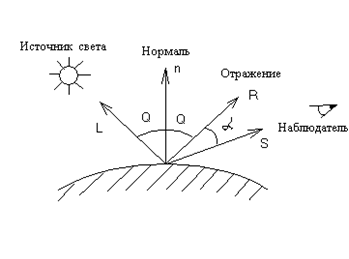
Рис. 54
Если поверхность не идеальна, то количество света достающего наблюдателя, зависит от пространственного распределения отраженного света. У гладких поверхностей распределение узкое, сфокусированное, у шероховатых поверхностей более широкое. В простых моделях освещения обычно пользуются эмпирической моделью Буи-Туонга Фонга, т .к. физические свойства зеркального отражения очень сложны. Модель Фонга имеет вид.
I s= Il W(i , l) Cos na , где W(i , l) - кривая отражения , представляющая отношение зеркально-отраженного света к падающему , как функцию угла падения i и длины волны l ; n- степень , аппроксимирующая пространственное распределение зеркально отраженного света.
Большие значения n дают сфокусированные пространственные распределения свойственны для металлов и других блестящих поверхностей, а малые более широкие распределения для неметаллов, например бумаги (Рис.55).
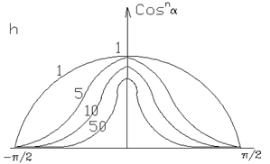
Рис. 55
Коэффициент зеркального отражения зависит от угла падения, даже при перпендикулярном падении зеркально отражается только часть света, а остальное либо поглощается, либо отражается диффузно. Это соотношение определяется свойствами вещества и длиной волны. Коэффициент отражения для некоторых неметаллов может быть всего 4% в то время как для металлов 80%.
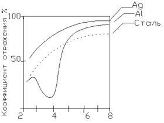
Рис. 56 Коэффициент отражения при нормальном падении света. Длина волны ( х10-3 )
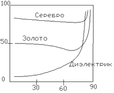
Рис. 57. Угол падения . Коэффициент отражения как функция
угла падения при q= 90. Коэффициент отражения=100%
.
Объединяя эти результаты, с формулой рассеянного света и диффузного отражения получим модель освещения:
Функция W(i, l) - довольно сложна, поэтому ее заменяют Ks, который выбирается эмпирически.
Следовательно
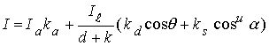
В машинной графике эта модель часто называется функцией закраски и применяется для расчета интенсивности или объекта (пикселов).
Чтобы получить цветное изображение нужно найти функцию закраски для каждого из основных трех цветов. Константа Ks обычно одинакова для всех трех цветов. Если имеется несколько источников света, то их эффекты суммируются и модель освещения выглядит так:
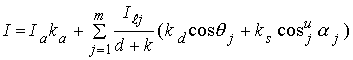
m - количество источников света.
Используя формулу скалярного произведения двух векторов, получаем
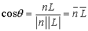 , где n иL единичные вектора - и направлены к источнику света
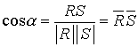 , R и S единичные вектора.
Следовательно
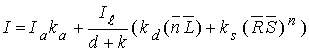
Определение нормали к поверхности
Нормаль к поверхности представляет ее локальную кривизну, а следовательно и направление зеркального отражения. Из аналитического описания поверхности нормаль определяется непосредственно. Но для многих поверхностей бывает задана лишь их полигональная аппроксимация Следовательно, зная уравнение каждой грани, можно найти направление нормали.
Во многих алгоритмах удаления невидимых линий и поверхностей используются только ребра или вершины, для объединения их с моделью освещения, необходимо знать приближенное значение нормали на ребрах и в вершинах.
Пусть заданы уравнения плоскостей полигональных граней, тогда нормаль к их общей вершине равна среднему значению нормалей ко всем многоугольникам сходящимся в этой вершине. (Рис.58).
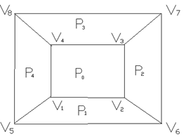
Рис. 58
Пример: Направление приближенной нормали в точке V1 есть
nv1= (a0 + a1 +a4)i + (b0+b1+b4)j + (c0+c1+c4)k, где a0 , a1, a4, b0 .....,. c0 .., коэффициенты уравнения плоскостей P0 ,P1, P4 окружающих точку V1.
Если требуется найти только направления нормали, то делить результат на количество граней не обязательно.
Если уравнения плоскостей не заданы, то нормаль к вершине можно определить, усредняя векторные произведения всех ребер, пересекающихся в вершине.
n v1=V1V2xV1V4+V1V5xV1V2+V1V4xV1V5
Пример: Приближенное вычисление нормали к поверхности .
Рассмотрим усеченную пирамиду .
Координаты вершины : V1( -1,-1,1) V4( -1,1,1 ) V7 ( 2,2,0 )
V2( 1,-1,1) V5 ( -2,-2,0) V8 ( -2,2,0)
V3( 1,1,1 ) V6( 2,-2,0)
Уравнения плоскостей для граней P0 ,P1, P4
P0 : z - 1 = 0
P1: -y + z - 2 = 0
P4 : -x + z - 2 = 0
Усреднение нормали к окружающим многоугольникам
n 1=( a 0 +a 1 +a 4 )i+( a 0 +a 1 +a 4 )j+( a 0 +a 1 +a 4 )k=-i - j+3k
абсолютная величина ½n 1½= 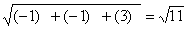 следовательно единичная нормаль
n 1 /½n 1½=-0.3i - 0.3j + 0.9k
Векторное произведение ребер, сходящихся в вершине V1
Усредняя векторные произведения получаем приближенную нормаль в точке V1
n 1=-2i-2j+8k Þ
½n 1½= 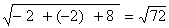 Þ
n 1 /½n 1½= -0,24i-0,24j+0,94k
Ненормированные нормали различаются по величине и направлению в зависимости от способа аппроксимации. Следовательно, модель освещения будет иметь различные результаты.
Для моделей освещения очень важно правильно задавать направление вектора отражения. По закону отражения, вектор падающего света, нормаль к поверхности и вектор отражения лежат в одной плоскости. И на этой плоскости угол падения равен углу отражения (Рис. 59).
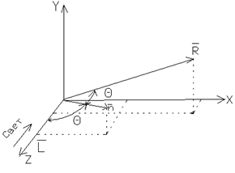
Рис. 59
Фонг вывел отсюда простое решение для случая, когда свет падает вдоль оси Z. Это предположение удобно для модели освещения с одним точным источником. Если начало системы координат перенести в точку поверхности, то проекция нормали и вектора отражения на плоскости XY будут лежать на одной прямой (Рис. 60).
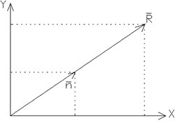
Рис. 60
Таким образом 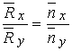 , где `Rx ,`Ry ,`nx , `ny - x и y- составляющие единичных векторов отражения и нормали.
Обозначим угол между единичным вектором нормали и осью Z через q. Тогда составляющая вектора нормали по оси Z есть
`nz = Cosq 0£ q £p/2
Аналогично, угол между единичным вектором отражения и Z равен 2q. Следовательно,
`Rz = Cos2q = 2 Cos2q - 1=2nz2 - 1
Известно ,что Rx2+R y2+Rz2 =1 и `Rx2 +`Rz2 = 1- Rz2 =1- Cos22q
или 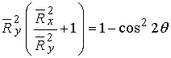
Используя соотношения x и y - составляющих единичных векторов отражения и нормали и соотношение `nx2 +`ny2 +`nz2 = 1
Получаем 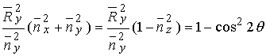
Перепишем правую часть
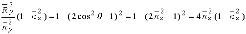
или `Ry = 2`nz ny
и
Rx= 2`nz nx.
Если при построении полигональной поверхности для каждой грани используется по одной нормали, то модель освещения создает изображение, состоящее из отдельных многоугольников. Методом Гуро можно получить сглаженное изображение. Для того чтобы изобразить объект методом построчного сканирования, нужно в соответствии с моделью освещения рассчитать интенсивность каждого пиксела. Нормали к поверхности апроксимируются в вершинах многоугольников.
Однако сканирующая строка не обязательно проходит через вершины многоугольников ().
При закраске Гуро сначала определяется интенсивность вершин многоугольника, а затем с помощью билинейной интерполяции вычисляется интенсивность каждого пиксела на сканирующей строке. Рассмотрим участок полигональной поверхности.
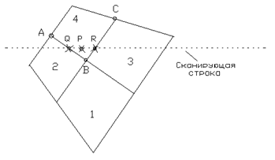
Рис. 61
Значение интенсивности в точке P определяется линейной интерполяцией в точках Q и R . Для получения интенсивности в точке q - пересечение ребра многоугольника со сканирующей строкой нужно с помощью линейной интерполяцией интенсивностей в точках A и B найти найти интенсивность в точке Q.
Iq=uIA+(1-u)IB 0£ u £ 1,
где 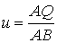
Аналогично для R интерполируются интенсивности в вершинах B и C.
IR = wIB+(1-w)IC 0£ w £ 1,
где
Наконец линейной интерполяцией по строке между точками q и R находится интенсивность точки P, т.е.
IP=tIq+(1-t)IR 0£ t £ 1,
где 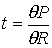
Значение интенсивности вдоль сканирующей строки можно вычислить инкрементально. Для двух пикселов t1 и t2 на сканирующей строке
IP2=t2Iq+(1-t2)IR
IP1=t1Iq+(1-t1)IR
Вычитая, получим, что вдоль строки интенсивность.
IP2= IP1+( Iq - IR)( t2- t1) = IP1+ Itt.
Закраска Фонга требует больших вычислительных затрат. При закраске Гуро вдоль сканирующей строки интерполируется значение интенсивности, а при Закраске Фонга - вектор нормали, затем он используется в модели освещения для определенной интенсивности. При этом достигается лучшая локальная аппроксимация кривизны поверхности и, следовательно, лучшее изображение.